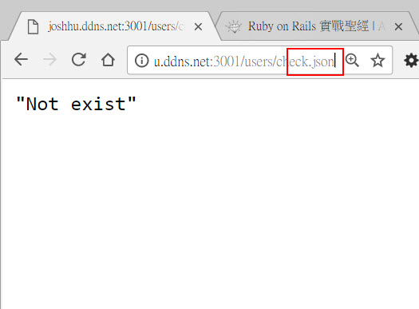
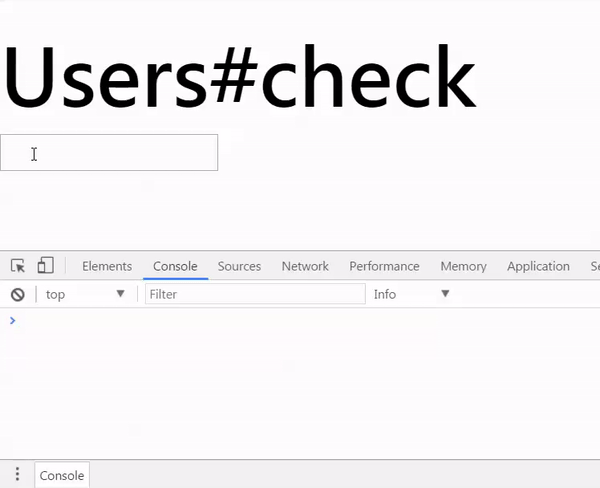

")
Rails用ajax call作表單即時驗證(ajax and json)
|
前言
在許多網站註冊時，你會發現如果輸入「使用者名稱」或「電子郵件」時，不需要按下「送出」按鍵，只要你離開該輸入欄位時，就會自動跳出「使用者已存在」之類的提示。這個功能可以即時檢查，速度快又夠體貼，一樣也是用ajax call來做，我們就來看看詳細作法。
環境設定
系統設定
- Rails 4.2.6
- Ruby 2.3.0
- Mac OS Sierra
Rails設定
- 有一個User model, 其中有一個id欄位。
程式說明
路由設定
首先我們在routes.rb中先定義好user的路由，主要是這一行：
get 'users/check', to: 'users#check', as: 'userCheck'
這一行主要的目的就是把userCheck這個路徑導到users_controller.rb中的check這個action，這可以讓controller更加簡單，只要一有個action就行。
Controller
接下來看controller。
# app/controller/users_controller.rb
class UsersController < ApplicationController
def check
@user = User.find_by(uid: params[:uid])
respond_to do |f|
f.html
f.json {render json: (@user.present?)? @user.lcname.to_json : "Not exist".to_json}
end
end
end
說明
程式很簡單，就只有check這個action而已。第4行就是讀取使用者輸入的使用者id，使用params[:uid]來讀取使用者的輸入。如果是一開始載入頁面，自然就沒有這個id。
第5-7行非常重要，這邊用到respond_to這個rails的指令。
首先如果系統是正常進來，就是使用者打了http://192.168.1.105:3000/users/check的話，則伺服器應該就會傳回html，也就是我們看到的頁面, 你可以試著輸入http://192.168.1.105:3000/users/check.html，可以發現是指到同一個頁面，這是因為rails在伺服器端丟一個check.html回去給瀏覽器。
第二個情況就是瀏覽器(不是使用者)利用ajax call要求json資料時，我們必須也要有所回應，因此就有第7行的程式碼，針對要求ajax call的回應，等一下會在view中詳細說明。
這邊第7行很簡單，表示，如果碰到了ajax call並且要求json，則傳回json格式的資料(即render json)。這也就是為什麼後面的@user.lcname和單純的字串"Not exist"都要利用.to_json的方法先轉換成json格式才能傳回使用者的瀏覽器。這個轉換的過程稱之為「序列化」(Serlization)。
你可以試著輸入http://192.168.1.105:3000/users/check.json，就會發現下圖的畫面，表示我們要求了json的資料，但是因為找不到對應的@user，所以就會走到第7行程式後面的"Not exist"。第7行程式碼後端是一個三元運算子，利用@user.present?這個方法來檢查資料庫中這個使用者是否存在。如果存在就傳回使用者的名稱@user.lcname，不存在就傳回一個"Not exist"的字串。

View
程式的重點在view，我們就來看看
// app/views/users/check.html.erb
<h1>Users#check</h1>
<%=text_field_tag :uid, nil, id: "input_user" %><br><br>
<div id='warningMessage'><div>
<script>
$("#input_user").blur(function onInputBlur(){
value = $(this).val();
if (value.trim().length > 0){
$.ajax({
url: "<%= userCheck_path(:json) %>",
type: 'GET',
datatype: "json",
data: {uid: $(this).val() },
error: function(){
console.log("error");
},
success: function(data){
if(data != "Not exist"){
$("#input_user").val("");
$("#warningMessage").html("使用者"+data+"已存在");
}
console.log(data);
}
});
}
})
$("#input_user").focus(function onInputFocus(){
//this.value="";
$("#warningMessage").html("");
})
</script>
說明
第3行使用了rails的text_field_tag這個helper來讓使用者輸入，輸入的值放在uid中。我們在這邊要定義一個DOM的id值"input_user"，因為這個值會改變。
第4行我們定義了一個顯示訊息的部分，等一下會在輸入欄下方有訊息顯示使用者是否存在。
接下來就是主程式。這邊使用了一個javascript的blurfunction。表示如果使用者輸入完離開這個文字框，就會綁定一個事件，綁定的事件就是7到26行。首先我們先用第8行排除使用者輸入的空格，重點就是第9號開始。如果使用者輸入後，我們在第7行取得輸入資料，呼叫伺服器器上的userCheck_path(第10行)，並且規定用json格式，這樣子controller才會去render json格式的資料。使用的RestFUL方法為GET(第11行的type), 使用的資料格式為json(第12行)，傳回的值為使用者輸入的uid(第13行)。
如果ajax call錯誤就在console印出”error”(第15行)。如果成功，就執行17-21行。
在第18行判斷是否有找到，如果找到了，表示這個使用者存在，因此我們在第19行把輸入的文字欄清空，並且在20行，在文字欄下方顯示「使用者xx已存在」。其中xx正是伺服器傳回來的@user.lcname的json格式姓名。
第22行是列出使用者姓名或是”Not exist”方便偵錯，第27-29行則是當使用者再度回到輸入欄時，會把輸入欄下方原來「使用者xx已存在」的訊息清掉。
這樣一來，我們就可以透過ajax call+json，在真正送出資料到後端伺服器之前就檢查使用者是否存在，讓表單的驗證更方便也更人性化：
整個完整流程
接下來是整個完整流程
- 使用者在瀏覽器中輸入
http://192.168.1.105:3000/users/check，就是在向後端的伺服器發出GET HTTP。 - 伺服器檢查使用者的請求，去查routes是否存在這個請求。
- 伺服器發現這個請求對應的是
users#check這個action，因此執行這個action中的動作。 - 執行
check這個action之後，把變數代表的值丟到對應的templatecheck.html.erb中 check.html.erb把變數代表的值換掉其中的變數，成為check.html。check.html傳回使用者瀏覽器執行。一開始使用者沒有輸入，因此@user是不存在。- 使用者在瀏覽器中輸入一個id，並且離開輸入欄位(用滑鼠或是按下tab鍵)
- 此時觸發了
'#input_user'這個id的blur事件，在使用者的瀏覽器上執行ajax call - 根據ajax call的參數，發現是一個GET事件，因此根據參數值去伺服器端
- 伺服器端接到ajax GET的要求，去routes找，發現是
users_controller中的check這個action。 - 此action接收了ajax參數中的
uid值，找到使用者@user。 - 找到的話，就取出
@user.lcname，並且把這個字串轉換成json，傳回瀏覽器。 - 找不到，就把”Not exist”這個字串轉換成json傳回瀏覽器。
- 使用者瀏覽器接收到資料，如果是找到，就在一個div中顯示使用者已存在，並且將原來的輸入欄清空。
- 如果沒找到，就不顯示任何訊息，讓使用者繼續。

我們可以從上圖中看到從伺服器傳回來的值，就是完整的一段script，並且把其中的html都更新成城市了。